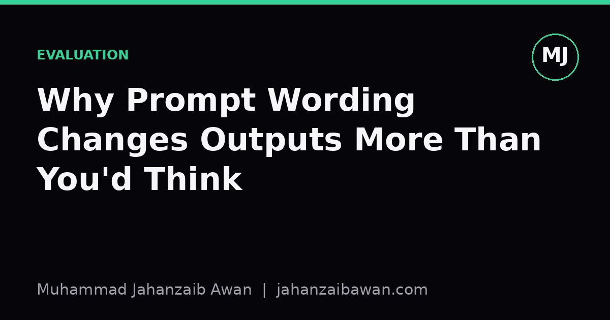

Why Prompt Wording Changes Outputs More Than You'd Think
Small edits to a prompt, a comma here, a reordered clause there, can shift a model's answer dramatically. Here is why that happens and how to test for it properly.

The problem hiding in plain sight
Anyone who has spent time with large language models has noticed something odd: asking the same question two slightly different ways can produce two very different answers. Swap 'summarise' for 'explain', move the instruction from the start of the prompt to the end, or add a single example, and accuracy on the same underlying task can move by a wide margin. This is not a quirk of a particular model or a sign that the system is broken. It is a predictable consequence of how these models are trained and how they represent instructions.
The reason this matters is practical, not academic. Teams building products on top of language models often pick a prompt once, test it informally on a handful of examples, ship it, and move on. If that prompt happens to sit in a fragile region of the input space, performance in production can look wildly different from performance in the demo. Worse, two people comparing 'model A versus model B' might really be comparing 'my slightly better prompt for A versus my slightly worse prompt for B', and drawing a confident conclusion from noise.
It helps to be precise about what is actually varying. A prompt is not just content, it is also format: the presence of a system message, the ordering of instructions and examples, whether the question appears before or after supporting context, the choice of delimiters, and even whitespace. Models are extremely good at pattern completion, which means they are also sensitive to superficial patterns that have nothing to do with the task's logic. A model that was trained on data where instructions typically appear as imperative sentences at the start of a block may behave worse when the same instruction is phrased as a polite question at the end.
A concrete worked example
Suppose you are testing a model on a simple classification task: deciding whether a short customer message expresses a complaint or not, across five hundred held-out messages. You try three prompt variants that are, in your judgement, semantically identical.
- Variant one: 'Classify the following message as Complaint or Not Complaint.'
- Variant two: 'Is this message a complaint? Answer Complaint or Not Complaint.'
- Variant three: a one-line instruction followed by two worked examples before the target message.
Imagine the results come out as 81 percent, 74 percent, and 89 percent accuracy respectively. That is a fifteen-point spread from wording alone, with no change to the model, the data, or the decoding settings. The third variant does better partly because the examples anchor the expected answer format, reducing cases where the model answers in full sentences instead of the two fixed labels, which then get marked wrong by a strict string-matching scorer. The second variant does worse partly because 'Is this message a complaint?' invites a yes or no answer, and the model sometimes answers 'Yes' instead of 'Complaint', again failing a brittle parser rather than failing the actual task.
This is the uncomfortable part: a meaningful chunk of that fifteen-point gap is not about reasoning ability at all, it is about output formatting colliding with an unforgiving evaluation script. If you only ever tested variant two, you might conclude the model is mediocre at this task. If you only tested variant three, you might conclude it is excellent. Both conclusions would be wrong, because neither captures the model's actual range of behaviour, and neither tells you how robust your chosen prompt will be when real users phrase things their own way.
How to actually test for this
The fix is not to find the one magic prompt and declare victory. It is to treat prompt choice as a variable you measure, not a constant you assume. A sensible procedure starts with generating a small family of genuinely paraphrased prompts, perhaps five to eight, that vary in surface form while preserving the task instruction. Include variation in instruction phrasing, in the position of examples, and in output format requests, since these are the dimensions most likely to interact with your scoring method.
Run every variant across the same held-out set, using the same decoding settings each time, and report the full spread of results rather than a single number. A result summarised as '85 percent, range 74 to 91 across prompt variants' is far more honest and more useful than '85 percent' on its own, because it tells the next person what to expect if they alter the wording even slightly. Where possible, separate failures caused by format mismatch from failures caused by genuine reasoning errors; a quick manual pass on fifty of the lowest-scoring examples usually reveals which category dominates, and that distinction changes what you should fix.
It is also worth checking for leakage into your prompt design itself. If you iterated your wording by looking at performance on the same test set you now report results on, you have effectively tuned on the test set, and your final number is optimistic. The cleaner approach is to develop and compare prompt variants on a separate validation split, lock the winning variant, and only then evaluate once on a held-out test set that none of the wording decisions were based on. This mirrors ordinary model selection discipline, and prompts deserve the same treatment as hyperparameters because, functionally, that is what they are.
Finally, keep records. Store the exact prompt text, the model version, the decoding parameters, and the scoring logic alongside every reported number. Prompt behaviour can shift when a provider updates a model silently, and without a saved record of the exact conditions, a result from three months ago becomes nearly impossible to reproduce or explain.
The practical takeaway
Prompt wording is not a cosmetic detail sitting outside the evaluation, it is part of the system under test. Treat it that way: vary it deliberately, measure the spread it produces, separate formatting failures from reasoning failures, and keep your wording decisions on a validation split away from your final test numbers. A single accuracy figure attached to a single prompt tells you almost nothing about how the system will behave once real users start phrasing things their own way. A range, built honestly across several reasonable phrasings, tells you a great deal, and it is the only version of the result worth trusting enough to build on.